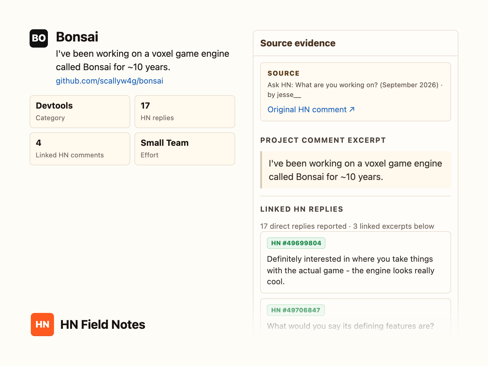
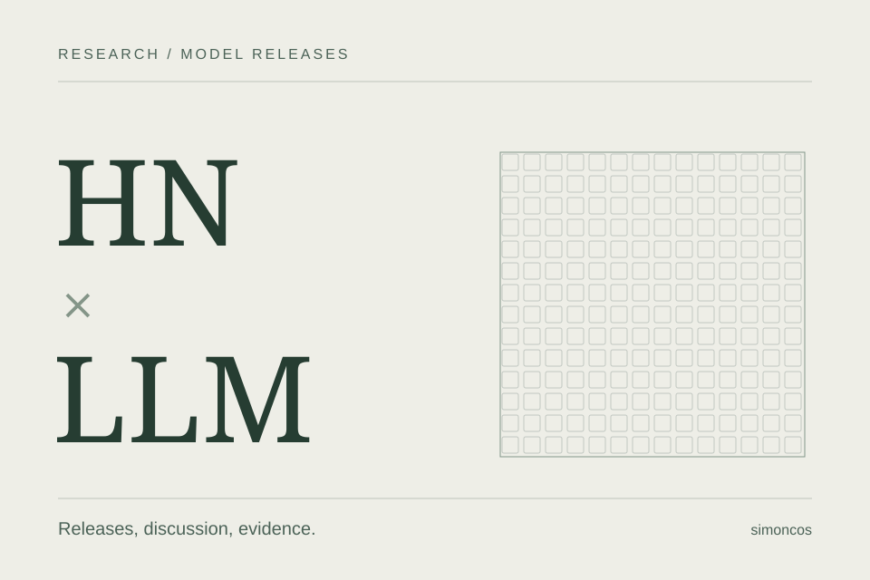
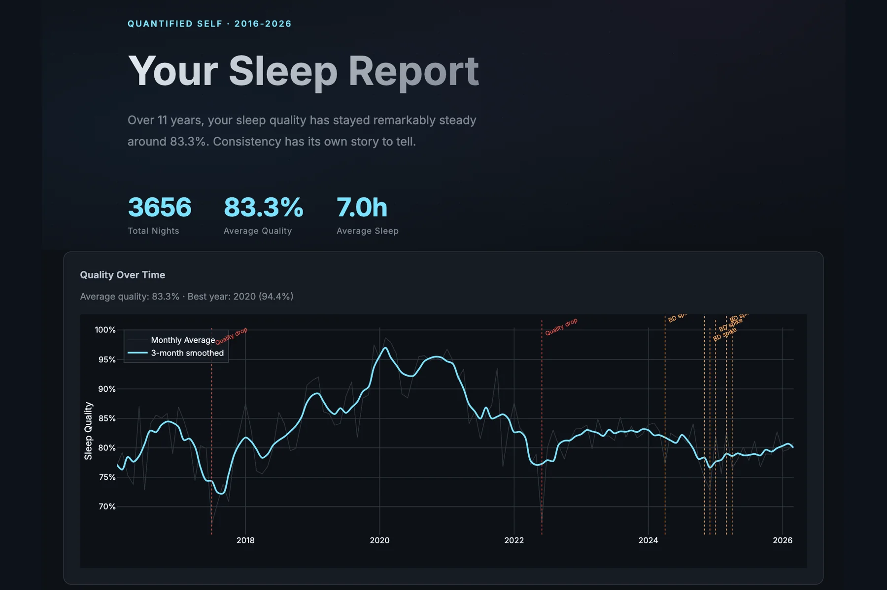
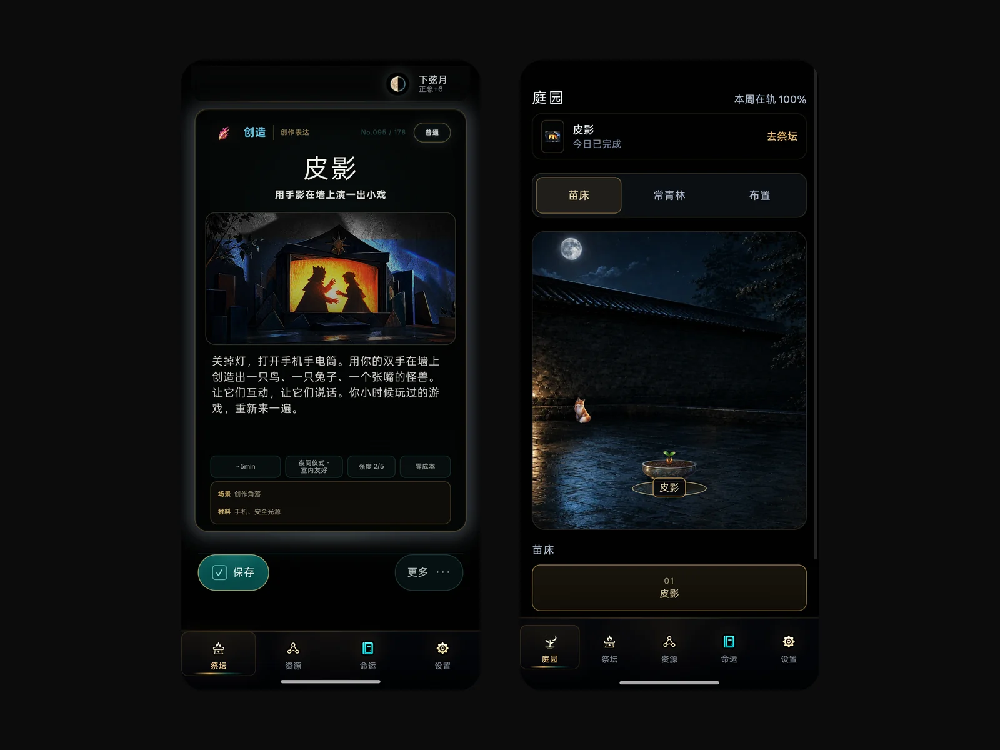
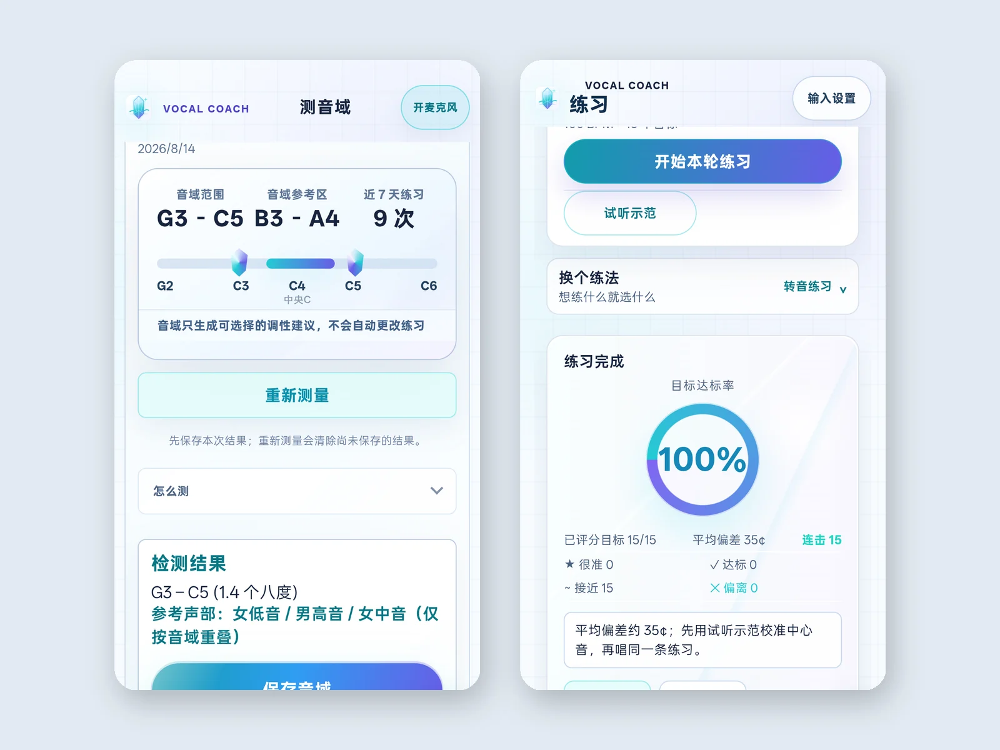
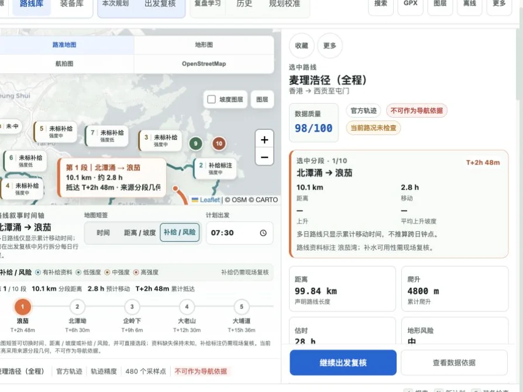
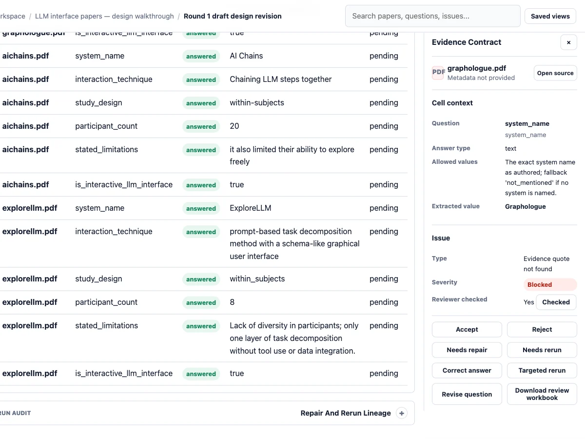
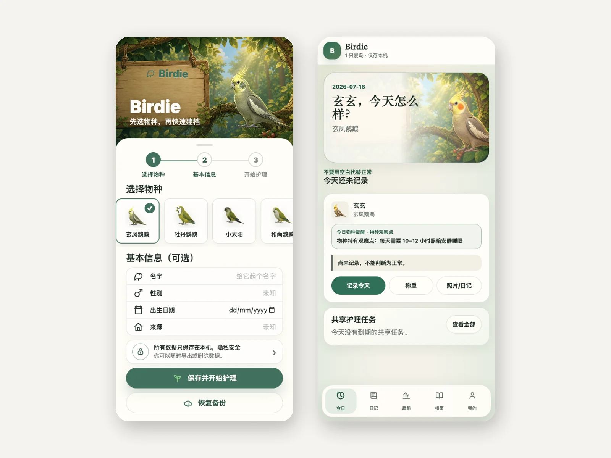
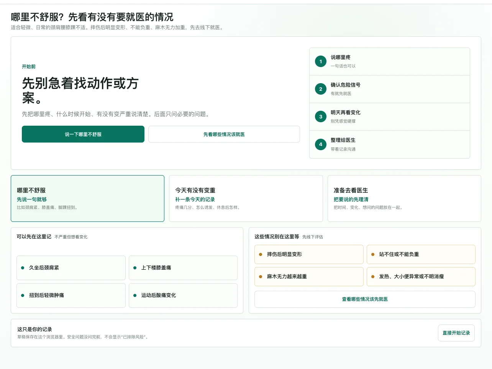
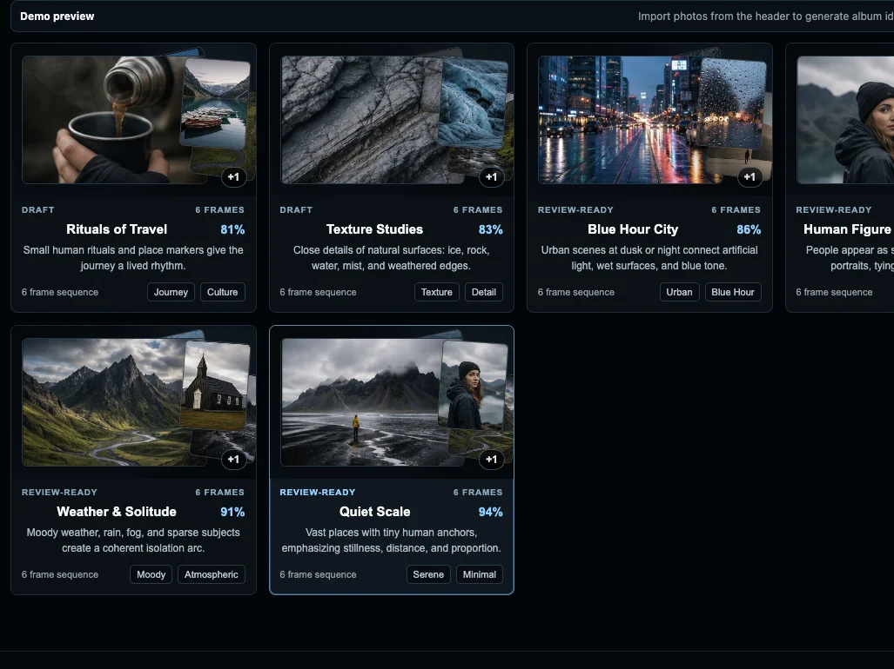

Apps应用
Apps I've made.我做的应用。
HN Field NotesProjects from Hacker News's monthly "What are you working on?" threads: browse by category, see trends, with the original posts and replies.Hacker News 每月「你在做什么」帖里的项目：按类别浏览、看趋势，附原帖和讨论。Updated monthly每月更新2026 —Tool · Hacker News · Web工具 · Hacker News · Web

HN × LLM: Model Releases and DiscussionHN × LLM：模型发布与讨论Explore how Hacker News discusses model releases across 14 AI companies, with source threads and coverage limits. An ongoing study.追踪 Hacker News 对 14 家 AI 公司模型发布的讨论，查看原帖、讨论关联与覆盖范围。研究持续进行中。Ongoing持续进行2026 —Explorer · Hacker News · Web交互探索 · Hacker News · Web
Sleep ToolkitTurns SleepCycle exports into readable reports: JSON, interactive HTML, and PDF.把 SleepCycle 导出转成可读报告：JSON、交互式 HTML 和 PDF。Maintained持续维护2026 —Tool · Python · Web工具 · Python · Web
Unannounced project未公布项目An agentic investment-research project.一个 Agentic 投资研究类项目。In progress在做2026
Daily OracleDraw a card each day, do the small real-world thing it asks, and log it. Over time a garden and a card collection fill up.每天抽一张卡，去现实里做一件小事，回来记下。日子久了，花园和卡册会慢慢长满。In progress在做2026

Vocal CoachA phone app for singing in tune: measure your range, sing to target notes, and see live whether you are sharp or flat.练音准的手机应用：测音域，跟着目标音唱，实时看自己偏高还是偏低。In progress在做2026

Hiking Planner徒步规划器Import a route, read it segment by segment (distance, climb, resupply), plan the trip, and log it afterwards.导入路线，按分段看距离、爬升和补给，排好行程，走完再记一笔。In progress在做2026

Paper Research PlatformAsk the same questions of a stack of papers. A model answers each with quoted evidence; you check the answers and export a workbook.给一批论文提同一组问题，模型逐篇作答并附原文证据，人工核对后导出成表。In progress在做2026

WeChat Chat Exporter微信聊天导出器Export your own WeChat chats on your own computer, together with their voice messages, images and files; the text is searchable, and every message keeps its time and where it came from.在自己的电脑上，把自己的微信聊天记录连同语音、图片和文件一起导出；文字可以搜索，每条消息都保留时间和出处。In progress在做2026
BirdieA phone app for keeping pet birds: a profile for each bird, one diary for weight, food and mood, and care notes for common species.养鸟的手机应用：每只鸟一份档案，体重、饮食、状态记在同一本日记里，还能查常见鸟种的照护要点。In progress在做2026

Muscle & Joint Log肌骨不适记录For everyday neck, back and joint strain: check first for signs that mean see a doctor, log how it changes day by day, and bring a summary to the appointment.记日常的颈肩腰膝不适：先对照哪些情况该去就医，再一天天记下变化，看医生时带上一份整理好的摘要。In progress在做2026

Photo CuratorImport a batch of photos; it reads their shooting details and colours, sorts them into album ideas, and helps you pick the frames and put them in order.导入一批照片，读出拍摄信息和色调，归成几组相册候选，再帮你挑片、排顺序。In progress在做2026
